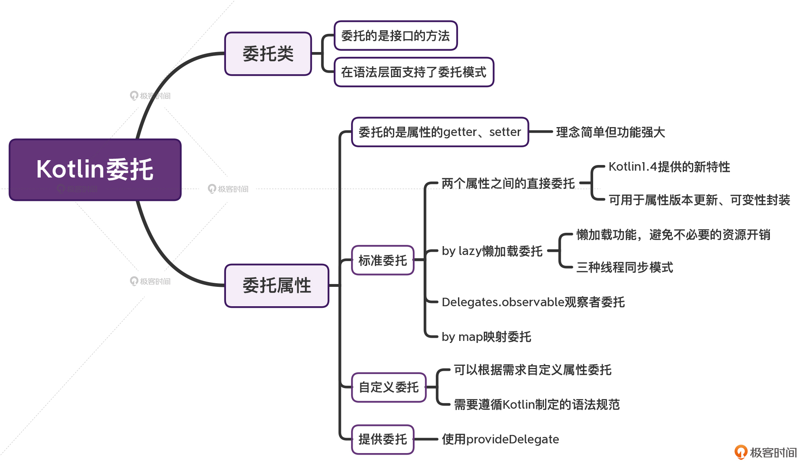

Audio委托：你为何总是被低估？
你好，我是朱涛。今天我们来学习 Kotlin 的委托特性。
因为扩展可以从类的外部，为一个类“添加”成员方法和属性，因此 Kotlin 扩展的应用场景也十分明确，而 Kotlin 委托的应用场景就没那么清晰了。这也是很多人会“重视扩展”，而“轻视委托”的原因。
然而，我要告诉你的是，Kotlin“委托”的重要性一点也不比“扩展”低。Kotlin 委托在软件架构中可以发挥巨大的作用，在掌握了 Kotlin 委托特性后，你不仅可以改善应用的架构，还可以大大提升开发效率。
另外，如果你是 Android 工程师，你会发现 Jetpack Compose 当中大量使用了 Kotlin 委托特性。可以说，如果你不理解委托，你就无法真正理解 Jetpack Compose。
看到这里，想必你也已经知道 Kotlin 委托的重要性了，接下来就来开启我们的学习之旅吧！
委托类
我们先从委托类开始，它的使用场景非常简单易懂：它常常用于实现类的“委托模式”。我们来看个简单例子：
interface DB {
fun save()
}
class SqlDB() : DB {
override fun save() { println("save to sql") }
}
class GreenDaoDB() : DB {
override fun save() { println("save to GreenDao") }
}
// 参数 通过 by 将接口实现委托给 db
// ↓ ↓
class UniversalDB(db: DB) : DB by db
fun main() {
UniversalDB(SqlDB()).save()
UniversalDB(GreenDaoDB()).save()
}
/*
输出：
save to sql
save to GreenDao
*/以上的代码当中，我们定义了一个 DB 接口，它的 save() 方法用于数据库存储，SqlDB 和 GreenDaoDB 都实现了这个接口。接着，我们的 UniversalDB 也实现了这个接口，同时通过 by 这个关键字，将接口的实现委托给了它的参数 db。
这种委托模式在我们的实际编程中十分常见，UniversalDB 相当于一个壳，它虽然实现了 DB 这个接口，但并不关心它怎么实现。具体是用 SQL 还是 GreenDao，传不同的委托对象进去，它就会有不同的行为。
另外，以上委托类的写法，等价于以下 Java 代码，我们可以再进一步来看下：
class UniversalDB implements DB {
DB db;
public UniversalDB(DB db) { this.db = db; }
// 手动重写接口，将 save 委托给 db.save()
@Override// ↓
public void save() { db.save(); }
}以上代码显示，save() 将执行流程委托给了传入的 db 对象。所以说，Kotlin 的委托类提供了语法层面的委托模式。通过这个 by 关键字，就可以自动将接口里的方法委托给一个对象，从而可以帮我们省略很多接口方法适配的模板代码。
委托类很好理解，下面让我们重点来看看 Kotlin 的委托属性。
委托属性
正如我们前面所讲的，Kotlin“委托类”委托的是接口方法，而“委托属性”委托的，则是属性的 getter、setter。在第 1 讲中，我们知道 val 定义的属性，它只有 get() 方法；而 var 定义的属性，既有 get() 方法，也有 set() 方法。
那么，属性的 getter、setter 委托出去以后，能有什么用呢？我们可以从 Kotlin 官方提供的标准委托那里找到答案。
标准委托
Kotlin 提供了好几种标准委托，其中包括两个属性之间的直接委托、by lazy 懒加载委托、Delegates.observable 观察者委托，以及 by map 映射委托。前面两个的使用频率比较高，后面两个频率比较低。这里，我们就主要来了解下前两种委托属性。
将属性 A 委托给属性 B
从 Kotlin 1.4 开始，我们可以直接在语法层面将“属性 A”委托给“属性 B”，就像下面这样：
class Item {
var count: Int = 0
// ① ②
// ↓ ↓
var total: Int by ::count
}以上代码定义了两个变量，count 和 total，其中 total 的值与 count 完全一致，因为我们把 total 这个属性的 getter 和 setter 都委托给了 count。
注意，代码中的两处注释是关键：注释①，代表 total 属性的 getter、setter 会被委托出去；注释②，::count，代表 total 被委托给了 count。这里的“::count”是属性的引用，它跟我们前面学过的函数引用是一样的概念。
total 和 count 两者之间的委托关系一旦建立，就代表了它们两者的 getter 和 setter 会完全绑定在一起，如果要用代码来解释它们背后的逻辑，它们之间的关系会是这样：
// 近似逻辑，实际上，底层会生成一个Item$total$2类型的delegate来实现
class Item {
var count: Int = 0
var total: Int
get() = count
set(value: Int) {
count = value
}
}也就是，当 total 的 get() 方法被调用时，它会直接返回 count 的值，也就意味着会调用 count 的 get() 方法；而当 total 的 set() 方法被调用时，它会将 value 传递给 count，也就意味着会调用 count 的 set() 方法。
也许你会好奇：Kotlin 1.4 提供的这个特性有啥用？为什么要分别定义 count 和 total？我们直接用 count 不好吗？
这个特性，其实对我们软件版本之间的兼容很有帮助。假设 Item 是服务端接口的返回数据，1.0 版本的时候，我们的 Item 当中只 count 这一个变量：
// 1.0 版本
class Item {
var count: Int = 0
}而到了 2.0 版本的时候，我们需要将 count 修改成 total，这时候问题就出现了，如果我们直接将 count 修改成 total，我们的老用户就无法正常使用了。但如果我们借助委托，就可以很方便地实现这种兼容。我们可以定义一个新的变量 total，然后将其委托给 count，这样的话，2.0 的用户访问 total，而 1.0 的用户访问原来的 count，由于它们是委托关系，也不必担心数值不一致的问题。
好了，除了属性之间的直接委托以外，还有一种委托是我们经常会用到的，那就是懒加载委托。
懒加载委托
懒加载，顾名思义，就是对于一些需要消耗计算机资源的操作，我们希望它在被访问的时候才去触发，从而避免不必要的资源开销。前面第 5 讲学习单例的时候，我们就用到了 by lazy 的懒加载。其实，这也是软件设计里十分常见的模式，我们来看一个例子：
// 定义懒加载委托
// ↓ ↓
val data: String by lazy {
request()
}
fun request(): String {
println("执行网络请求")
return "网络数据"
}
fun main() {
println("开始")
println(data)
println(data)
}
结果：
开始
执行网络请求
网络数据
网络数据通过“by lazy{}”，我们就可以实现属性的懒加载了。这样，通过上面的执行结果我们会发现：main() 函数的第一行代码，由于没有用到 data，所以 request() 函数也不会被调用。到了第二行代码，我们要用到 data 的时候，request() 才会被触发执行。到了第三行代码，由于前面我们已经知道了 data 的值，因此也不必重复计算，直接返回结果即可。
并且，如果你去看懒加载委托的源代码，你会发现，它其实是一个高阶函数：
public actual fun <T> lazy(initializer: () -> T): Lazy<T> = SynchronizedLazyImpl(initializer)
public actual fun <T> lazy(mode: LazyThreadSafetyMode, initializer: () -> T): Lazy<T> =
when (mode) {
LazyThreadSafetyMode.SYNCHRONIZED -> SynchronizedLazyImpl(initializer)
LazyThreadSafetyMode.PUBLICATION -> SafePublicationLazyImpl(initializer)
LazyThreadSafetyMode.NONE -> UnsafeLazyImpl(initializer)
}可以看到，lazy() 函数可以接收一个 LazyThreadSafetyMode 类型的参数，如果我们不传这个参数，它就会直接使用 SynchronizedLazyImpl 的方式。而且通过它的名字我们也能猜出来，它是为了多线程同步的。而剩下的 SafePublicationLazyImpl、UnsafeLazyImpl，则不是多线程安全的。
好了，除了这两种标准委托以外，Kotlin 也还提供了Delegates.observable 观察者委托、by map 映射委托，这两种委托比较简单，你可以点击这里给出的链接去了解它们的定义与用法。
自定义委托
在学完 Kotlin 的标准委托以后，你也许会好奇：是否可以根据需求实现自己的属性委托呢？答案当然是可以的。
不过，为了自定义委托，我们必须遵循 Kotlin 制定的规则。
class StringDelegate(private var s: String = "Hello") {
// ① ② ③
// ↓ ↓ ↓
operator fun getValue(thisRef: Owner, property: KProperty<*>): String {
return s
}
// ① ② ③
// ↓ ↓ ↓
operator fun setValue(thisRef: Owner, property: KProperty<*>, value: String) {
s = value
}
}
// ②
// ↓
class Owner {
// ③
// ↓
var text: String by StringDelegate()
}以上代码一共有三套注释，我分别标注了①、②、③，其中注释①有两处，注释②有三处，注释③也有三处，相同注释标注出来的地方，它们之间存在密切的关联。
首先，看到两处注释①对应的代码，对于 var 修饰的属性，我们必须要有 getValue、setValue 这两个方法，同时，这两个方法必须有 operator 关键字修饰。
其次，看到三处注释②对应的代码，我们的 text 属性是处于 Owner 这个类当中的，因此 getValue、setValue 这两个方法中的 thisRef 的类型，必须要是 Owner，或者是 Owner 的父类。也就是说，我们将 thisRef 的类型改为 Any 也是可以的。一般来说，这三处的类型是一致的，当我们不确定委托属性会处于哪个类的时候，就可以将 thisRef 的类型定义为“Any?”。
最后，看到三处注释③对应的代码，由于我们的 text 属性是 String 类型的，为了实现对它的委托，getValue 的返回值类型，以及 setValue 的参数类型，都必须是 String 类型或者是它的父类。大部分情况下，这三处的类型都应该是一致的。
不过上面这段代码看起来还挺吓人的，刚开始的时候你也许会不太适应。但没关系，你只需要把它当作一个固定格式就行了。你在自定义委托的时候，只需要关心 3 个注释标注出来的地方即可。
而如果你觉得这样的写法实在很繁琐，也可以借助 Kotlin 提供的 ReadWriteProperty、ReadOnlyProperty 这两个接口，来自定义委托。
public fun interface ReadOnlyProperty<in T, out V> {
public operator fun getValue(thisRef: T, property: KProperty<*>): V
}
public interface ReadWriteProperty<in T, V> : ReadOnlyProperty<T, V> {
public override operator fun getValue(thisRef: T, property: KProperty<*>): V
public operator fun setValue(thisRef: T, property: KProperty<*>, value: V)
}如果我们需要为 val 属性定义委托，我们就去实现 ReadOnlyProperty 这个接口；如果我们需要为 var 属性定义委托，我们就去实现 ReadWriteProperty 这个接口。这样做的好处是，通过实现接口的方式，IntelliJ 可以帮我们自动生成 override 的 getValue、setValue 方法。
以前面的代码为例，我们的 StringDelegate，也可以通过实现 ReadWriteProperty 接口来编写：
class StringDelegate(private var s: String = "Hello"): ReadWriteProperty<Owner, String> {
override operator fun getValue(thisRef: Owner, property: KProperty<*>): String {
return s
}
override operator fun setValue(thisRef: Owner, property: KProperty<*>, value: String) {
s = value
}
}提供委托（provideDelegate）
接着前面的例子，假设我们现在有一个这样的需求：我们希望 StringDelegate(s: String) 传入的初始值 s，可以根据委托属性的名字的变化而变化。我们应该怎么做？
实际上，要想在属性委托之前再做一些额外的判断工作，我们可以使用 provideDelegate 来实现。
看看下面的 SmartDelegator 你就会明白：
class SmartDelegator {
operator fun provideDelegate(
thisRef: Owner,
prop: KProperty<*>
): ReadWriteProperty<Owner, String> {
return if (prop.name.contains("log")) {
StringDelegate("log")
} else {
StringDelegate("normal")
}
}
}
class Owner {
var normalText: String by SmartDelegator()
var logText: String by SmartDelegator()
}
fun main() {
val owner = Owner()
println(owner.normalText)
println(owner.logText)
}
结果：
normal
log可以看到，为了在委托属性的同时进行一些额外的逻辑判断，我们使用创建了一个新的 SmartDelegator，通过它的成员方法 provideDelegate 嵌套了一层，在这个方法当中，我们进行了一些逻辑判断，然后再把属性委托给 StringDelegate。
如此一来，通过 provideDelegate 这样的方式，我们不仅可以嵌套 Delegator，还可以根据不同的逻辑派发不同的 Delegator。
实战与思考
至此，我们就算是完成了 Kotlin 委托的学习，包括委托类、委托属性，还有 4 种标准委托模式。除了这些之外，我们还学习了如何自定义委托属性，其中包括我们自己实现 getValue、setValue 两个方法，还有通过实现 ReadOnlyProperty、ReadWriteProperty 这两个接口。而对于更复杂的委托逻辑，我们还需要采用 provideDelegate 的方式，来嵌套 Delegator。
这里，为了让你对 Kotlin 委托的应用场景有一个更清晰的认识，我再带你一起来看看几个 Android 的代码案例。
案例 1：属性可见性封装
在软件设计当中，我们会遇到这样的需求：对于某个成员变量 data，我们希望类的外部可以访问它的值，但不允许类的外部修改它的值。因此我们经常会写出类似这样的代码：
class Model {
var data: String = ""
// ①
private set
private fun load() {
// 网络请求
data = "请求结果"
}
}请留意代码注释①处，我们将 data 属性的 set 方法声明为 private 的，这时候，data 属性的 set 方法只能从类的内部访问，这就意味着类的外部无法修改 data 的值了，但类的外部仍然可以访问 data 的值。
这样的代码模式很常见，我们在 Java/C 当中也经常使用，不过当我们的 data 类型从 String 变成集合以后，问题就不一样了。
class Model {
val data: MutableList<String> = mutableListOf()
private fun load() {
// 网络请求
data.add("Hello")
}
}
fun main() {
val model = Model()
// 类的外部仍然可以修改data
model.data.add("World")
}对于集合而言，即使我们将其定义为只读变量 val，类的外部一旦获取到 data 的实例，它仍然可以调用集合的 add() 方法修改它的值。这个问题在 Java 当中几乎没有优雅的解法。只要你暴露了集合的实例给外部，外部就可以随意修改集合的值。这往往也是 Bug 的来源，这样的 Bug 还非常难排查。
而在这个场景下，我们前面学习的“两个属性之间的委托”这个语法，就可以派上用场了。
class Model {
val data: List<String> by ::_data
private val _data: MutableList<String> = mutableListOf()
fun load() {
_data.add("Hello")
}
}在上面的代码中，我们定义了两个变量，一个变量是公开的“data”，它的类型是 List，这是 Kotlin 当中不可修改的 List，它是没有 add、remove 等方法的。
接着，我们通过委托语法，将 data 的 getter 委托给了 _data 这个属性。而 _data 这个属性的类型是 MutableList，这是 Kotlin 当中的可变集合，它是有 add、remove 方法的。由于它是 private 修饰的，类的外部无法直接访问，通过这种方式，我们就成功地将修改权保留在了类的内部，而类的外部访问是不可变的 List，因此类的外部只能访问数据。
案例 2：数据与 View 的绑定
在 Android 当中，如果我们要对“数据”与“View”进行绑定，我们可以用 DataBinding，不过 DataBinding 太重了，也会影响编译速度。其实，除了 DataBinding 以外，我们还可以借助 Kotlin 的自定义委托属性来实现类似的功能。这种方式不一定完美，但也是一个有趣的思路。
这里我们以 TextView 为例：
operator fun TextView.provideDelegate(value: Any?, property: KProperty<*>) = object : ReadWriteProperty<Any?, String?> {
override fun getValue(thisRef: Any?, property: KProperty<*>): String? = text
override fun setValue(thisRef: Any?, property: KProperty<*>, value: String?) {
text = value
}
}以上的代码，我们为 TextView 定义了一个扩展函数 TextView.provideDelegate，而这个扩展函数的返回值类型是 ReadWriteProperty。通过这样的方式，我们的 TextView 就相当于支持了 String 属性的委托了。
它的使用方式也很简单：
val textView = findViewById<textView>(R.id.textView)
// ①
var message: String? by textView
// ②
textView.text = "Hello"
println(message)
// ③
message = "World"
println(textView.text)
结果：
Hello
World在注释①处的代码，我们通过委托的方式，将 message 委托给了 textView。这意味着，message 的 getter 和 setter 都将与 TextView 关联到一起。
在注释②处，我们修改了 textView 的 text 属性，由于我们的 message 也委托给了 textView，因此这时候，println(message) 的结果也会变成“Hello”。
在注释③处，我们改为修改 message 的值，由于 message 的 setter 也委托给了 textView，因此这时候，println(textView.text) 的结果会跟着变成“World”。
案例 3：ViewModel 委托
在 Android 当中，我们会经常用到 ViewModel 来存储界面数据。同时，我们不会直接创建 ViewModel 的实例，而对应的，我们会使用委托的方式来实现。
// MainActivity.kt
private val mainViewModel: MainViewModel by viewModels()这一行代码虽然看起来很简单，但它背后隐藏了 ViewModel 复杂的实现原理。为了不偏离本节课的主题，我们先抛开 ViewModel 的实现原理不谈。在这里，我们专注于研究 ViewModel 的委托是如何实现的。
我们先来看看 viewModels() 是如何实现的：
public inline fun <reified VM : ViewModel> ComponentActivity.viewModels(
noinline factoryProducer: (() -> Factory)? = null
): Lazy<VM> {
val factoryPromise = factoryProducer ?: {
defaultViewModelProviderFactory
}
return ViewModelLazy(VM::class, { viewModelStore }, factoryPromise)
}
public interface Lazy<out T> {
public val value: T
public fun isInitialized(): Boolean
}原来，viewModels() 是 Activity 的一个扩展函数。也是因为这个原因，我们才可以直接在 Activity 当中直接调用 viewModels() 这个方法。
另外，我们注意到，viewModels() 这个方法的返回值类型是 Lazy，那么，它是如何实现委托功能的呢？
public inline operator fun <T> Lazy<T>.getValue(thisRef: Any?, property: KProperty<*>): T = value实际上，Lazy 类在外部还定义了一个扩展函数 getValue()，这样，我们的只读属性的委托就实现了。而 Android 官方这样的代码设计，就再一次体现了职责划分、关注点分离的原则。Lazy 类只包含核心的成员，其他附属功能，以扩展的形式在 Lazy 外部提供。
小结
最后，让我们来做一个总结吧。
委托类，委托的是接口的方法，它在语法层面支持了“委托模式”。
委托属性，委托的是属性的 getter、setter。虽然它的核心理念很简单，但我们借助这个特性可以设计出非常复杂的代码。
另外，Kotlin 官方还提供了几种标准的属性委托，它们分别是：两个属性之间的直接委托、by lazy 懒加载委托、Delegates.observable 观察者委托，以及 by map 映射委托；
两个属性之间的直接委托，它是 Kotlin 1.4 提供的新特性，它在属性版本更新、可变性封装上，有着很大的用处；
by lazy 懒加载委托，可以让我们灵活地使用懒加载，它一共有三种线程同步模式，默认情况下，它就是线程安全的；Android 当中的 viewModels() 这个扩展函数在它的内部实现的懒加载委托，从而实现了功能强大的 ViewModel；
除了标准委托以外，Kotlin 可以让我们开发者自定义委托。自定义委托，我们需要遵循 Kotlin 提供的一套语法规范，只要符合这套语法规范，就没问题；
在自定义委托的时候，如果我们有灵活的需求时，可以使用 provideDelegate 来动态调整委托逻辑。

看到这里，相信你也发现了，Kotlin 当中看起来毫不起眼的委托，实际上它的功能是极其强大的，甚至可以说它比起扩展毫不逊色。其实，只是因为 Kotlin 的委托语法要比扩展更难一些，所以它的价值才更难被挖掘出来，进而也就容易被开发者所低估。
希望这节课的内容可以对你有所启发，也希望你可以将 Kotlin 强大的委托语法，应用到自己的工作当中去。
思考题
这节课我们学习了 Kotlin 的委托语法，也研究了几个委托语法的使用场景，请问你还能想到哪些 Kotlin 委托的使用场景呢？欢迎在评论区分享你的思路，我们下节课再见。
COMMUNITY NOTES
读者评论
这篇文章暂时没有读者留言。